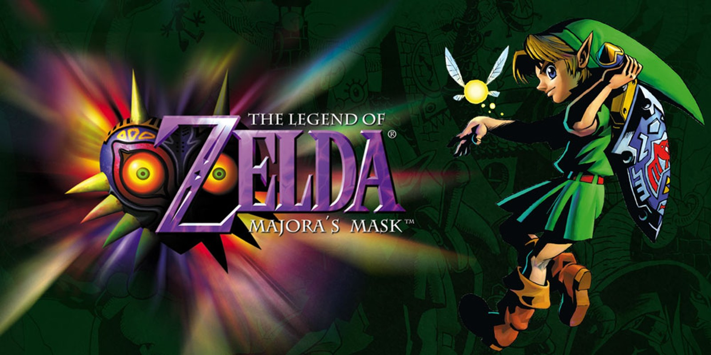
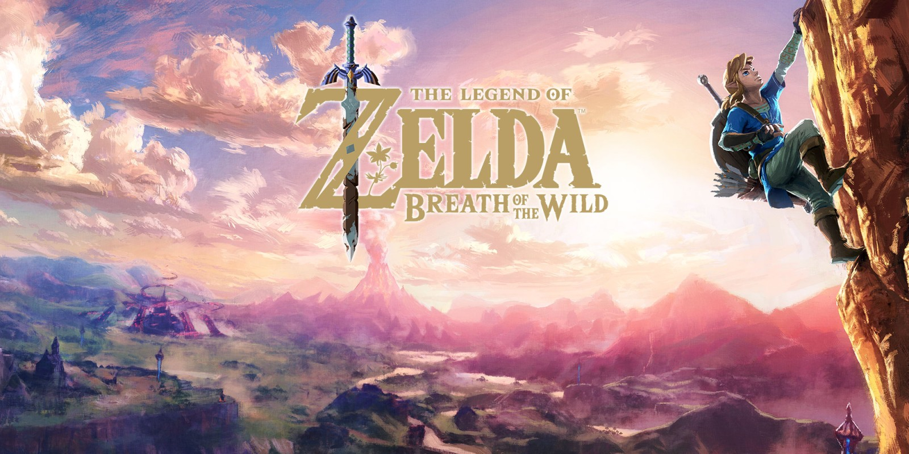

The Legend of Zelda (1986)
El primer juego de la serie que introdujo a los jugadores al mundo de Hyrule.
Zelda II: The Adventure of Link (1987)
El segundo juego de la serie con una jugabilidad y perspectiva diferente.
The Legend of Zelda: A Link to the Past (1991)
Un clásico que regresó a la perspectiva top-down y expandió la historia de Hyrule.

The Legend of Zelda: Ocarina of Time (1998)
Considerado uno de los mejores juegos de todos los tiempos, introdujo la serie al 3D.

The Legend of Zelda: Majora's Mask (2000)
Una secuela directa de Ocarina of Time con un tono más oscuro y mecánicas de tiempo.

The Legend of Zelda: The Wind Waker (2002)
Introdujo un estilo de arte cel-shaded y una gran aventura en el mar.

The Legend of Zelda: Twilight Princess (2006)
Un regreso a un estilo más oscuro y realista con una historia épica.
The Legend of Zelda: Skyward Sword (2011)
Explora los orígenes de la leyenda de la Espada Maestra y el reino de Hyrule.

The Legend of Zelda: Breath of the Wild (2017)
Revolucionó la serie con un vasto mundo abierto y exploración libre.